The complete guide
What the SVD is, how it works in maths and in code, and how to use every part of the site.
A picture on your screen is just a big table of numbers. Each little square (a pixel) has a number for how bright it is, from 0 (black) to 255 (white). A table of numbers like that is called a matrix.
The Singular Value Decomposition (SVD) is a way of cutting any matrix into simple layers, like the layers of an onion or the tracks of a song. The layers are sorted from most important to least important. The first layer holds the big shapes (light and dark areas). Later layers add finer and finer detail.
Compression idea: if we keep only the first few layers and throw the rest away, we still get a recognisable picture, but we need to store far fewer numbers. The more layers we keep, the closer we get to the original.
| Word | Plain-English meaning |
|---|---|
| Pixel | One tiny square of a picture. In a grey picture it has one number (0 to 255). In a colour picture it has three: red, green and blue. |
| Matrix | A rectangle of numbers in rows and columns. A picture that is 256 pixels tall and 256 wide is a 256 × 256 matrix. We call its size m × n (m rows, n columns). |
| Row / column | A row goes across, a column goes down. |
| Vector | A single list of numbers, such as one column of a matrix. |
| Matrix multiplication | The entry in row i, column j of the answer is (row i of the first matrix) times (column j of the second), multiplying pairs and adding. Example: row (3, 1) times column (1, 1) = 3·1 + 1·1 = 4. |
| Transpose (Aᵀ) | Flip a matrix so rows become columns. |
| Rank | How many truly different "patterns" a matrix contains. If one row is just 2 × another row, it adds nothing new. In this project, rank k also means "keep k layers". |
| Eigenvector / eigenvalue | A special direction that a matrix only stretches (does not turn). If Av = λv, then v is an eigenvector and the stretch factor λ is the eigenvalue. |
| Orthogonal / orthonormal | Vectors at right angles to each other (and each of length 1). A matrix made of such columns just rotates or flips things, without stretching them. |
| Singular values (σ) | The "importance scores" of the layers, written σ₁ ≥ σ₂ ≥ σ₃ ≥ … ≥ 0. Big σ = important layer. |
| Norm (Frobenius) | A way to measure the "size" of a matrix: square every entry, add them all, take the square root. The size of an error matrix tells us how wrong a picture is. |
| Energy | The sum of the squared singular values. "98 % energy retained" means the layers we kept carry 98 % of the total σ² sum. |
| Reconstruction | The picture rebuilt from only the first k layers. |
| MSE, PSNR, SSIM | Scores of picture quality (see Part 3). |
| Exact vs randomized SVD | Two ways of computing the layers: a slower, full, very accurate way (Jacobi) and a faster way that only finds the first few layers using random numbers. |
Every real m × n matrix A can be written as
Multiplying it out gives a sum of simple layers, each one a "column times row" matrix:
Each layer σiuiviT is a rank-1 matrix: one vertical pattern ui times one horizontal pattern vi, scaled by its importance σi.
A matrix takes a circle of arrows and turns it into an ellipse. The SVD says: first rotate (VT), then stretch along the axes (Σ, by σ₁ in one direction and σ₂ in the other), then rotate again (U). The singular values are the lengths of the ellipse's axes.
Why this works: ATA = V Σ² VT, so its eigenvalues are exactly σ².
| 3 | 1 |
| 1 | 3 |
| 10 | 6 |
| 6 | 10 |
| 1 | 1 |
| 1 | −1 |
| 4 | 0 |
| 0 | 2 |
| 2 | 2 |
| 2 | 2 |
So the error is exactly the energy of the layers we threw away, and the fraction we keep is the energy retained:
Keeping k layers means storing k columns of length m, k rows of length n and k singular values:
For our 256 × 256 photo with k = 20: 20 × 513 = 10 260 numbers instead of 65 536 (about 6.4 times fewer). A colour picture has three matrices (red, green, blue), so we multiply by 3.
| Score | Meaning | Good means |
|---|---|---|
| MSE | Average of (original − rebuilt)² over all pixels. | small |
| PSNR (dB) | 10 · log₁₀(255² / MSE). A scale that turns MSE into "decibels". | big (30 dB is decent, 40 dB very good) |
| SSIM | Compares local brightness, contrast and structure; 1 means identical. | close to 1 |
| Relative error | (size of the error) ÷ (size of the picture), as a percentage. | small |
Two kinds of error appear on the site. The spectral error is the exact mathematics from the formula above. The pixel error is measured on the final picture after rounding to whole numbers 0 to 255, so it is very slightly different.
The project is written in Python. The rule of the project: the important algorithms are written from scratch. NumPy is only used as a fast container for arrays and for adding and multiplying them. No library SVD, no image library.
| File | What it does |
|---|---|
formats.py | Reads and writes PNG, BMP and PGM/PPM files by hand (decompresses the PNG data, undoes PNG's row filters, checks sizes and errors). |
linalg.py | The maths: Householder QR, the Jacobi SVD and the randomized SVD. |
compress.py | Turns an image into matrices, calls the SVD, rebuilds rank-k pictures, adaptive blocks, storage counts. |
metrics.py | MSE, PSNR, SSIM and relative error. |
lab.py, samples.py | Data for the website: graphs' numbers, single layers, the 2×2 example, the nine sample images. |
web.py + static/ | The website: a small Flask server and the browser code (HTML, CSS, JavaScript). |
cli.py | The command-line tool: svdcomp compress / info / benchmark. |
Idea in plain words: take the columns of the matrix and keep rotating pairs of columns until all columns are at right angles to each other. When that is done, the lengths of the columns are the singular values, and the normalised columns give U.
repeat until nothing changes much (a "sweep" visits every pair of columns):
for each pair of columns (p, q):
a = p·p, b = q·q, c = p·q # dot products
if |c| is not tiny:
choose a rotation angle that makes the new p and q perpendicular
rotate the two columns (and the matching columns of V)
singular value i = length of column i
u_i = column i divided by its length
sort from biggest to smallest
Cost grows like m·n·k instead of m·n², so it is much faster when k is small. It is an approximation: the picture it gives is very good, but it is not guaranteed to equal the mathematically best rank-k picture, so the site labels its error as an estimate.
for every channel:
take the first k columns of U, multiply each by its singular value,
multiply by the first k rows of V^T # = sigma1*u1*v1^T + ... + sigmak*uk*vk^T
round to whole numbers and clip to 0..255
stack the channels back into one picture
The SVD is computed once and kept in memory. Changing k afterwards only needs this cheap multiplication, which is why the slider and the animation are quick.
Storage per tile is channels × (1 + kt(height + width + 1)).
| Action | Behind the scenes |
|---|---|
| Upload an image | The browser sends it to the server. The server checks the real content (not the file name), limits the size, decodes it, remembers it in a small in-memory cache and replies with a secret token. |
| Compute SVD | The server runs the exact or randomized SVD once, stores the factors, and sends back the singular values and the curves for the graphs. |
| Move the rank slider / Play | The browser asks for "the picture at rank k". The server rebuilds it from the stored factors and sends it with its scores. The animation asks for one rank at a time, waits for the answer, shows it, then waits before asking for the next. |
| Show component | The server returns the single layer σiuiviT drawn with a blue–white–red colour scale. |
| Adaptive blocks | The server runs the tile method and returns the picture plus the rank of every tile. |
Safety checks on uploads: maximum 20 MB; maximum 4 million pixels; the image size is read from the file header before memory is reserved; PNG decompression is capped so a "zip bomb" cannot explode; file names are never inserted into the page as HTML; a strict content policy blocks outside scripts; nothing leaves your computer.
Start it with svdcomp-web and open http://127.0.0.1:5000. Everything runs on your own computer and works without internet.
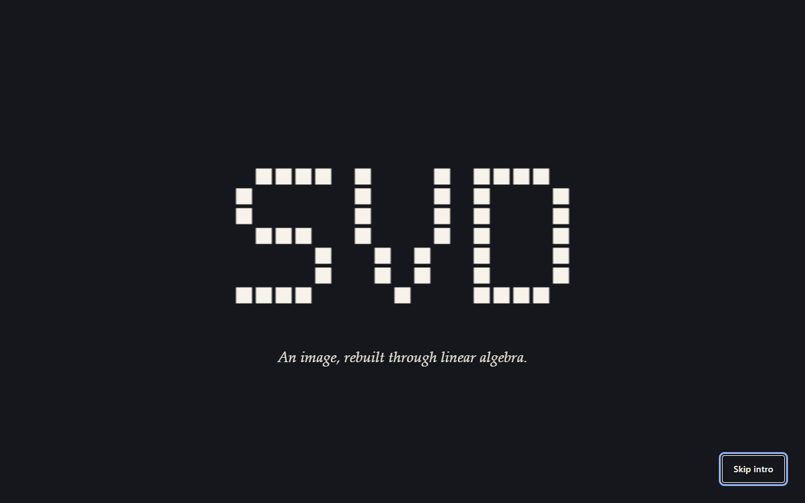
?intro=0 to the address turns it off.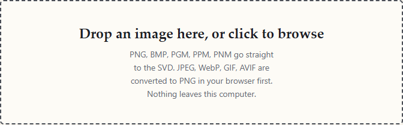
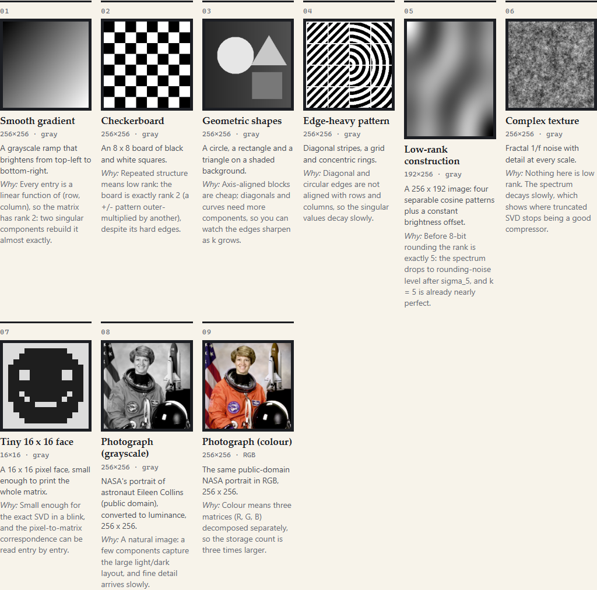
| Sample | What it shows about the SVD |
|---|---|
| Smooth gradient | Almost no detail: two layers rebuild it almost perfectly. |
| Checkerboard | Repeated pattern: exactly rank 2, so 2 layers are perfect. |
| Geometric shapes | Straight edges are cheap; circles and diagonals need more layers. |
| Edge-heavy pattern | Diagonal stripes and rings: the layers fade away slowly. |
| Low-rank construction | Built from exactly 5 layers, so after 5 everything is rebuilt. |
| Complex texture | Noise-like detail everywhere: a bad case for SVD compression. |
| Tiny 16 × 16 face | So small you can see each pixel as a matrix entry; exact SVD is instant. |
| Photograph (grey / colour) | A real picture (NASA, public domain). Colour is three matrices. |
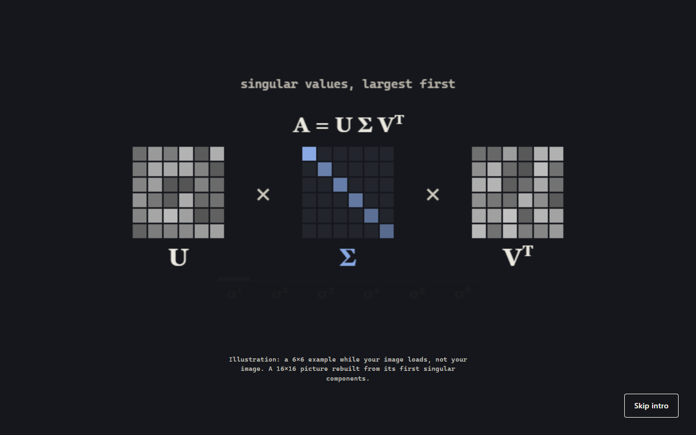
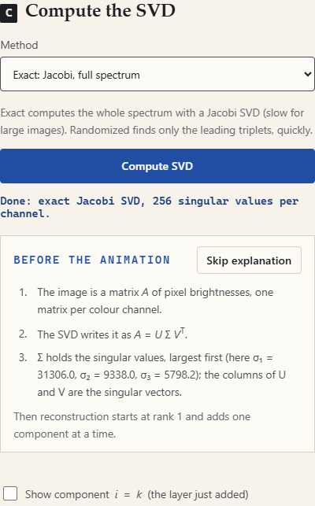
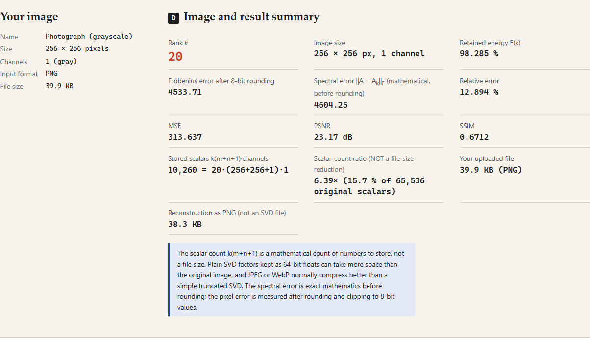
| Item | Meaning |
|---|---|
| Name, size, channels, input format, file size | Facts about the file you loaded. |
| Rank k | How many layers are being used right now. |
| Retained energy E(k) | How much of the picture's total layer-strength those k layers keep. |
| Frobenius error / spectral error / relative error | How far the rebuilt picture is from the original (after rounding / by the exact formula / as a percentage). |
| MSE, PSNR, SSIM | Quality scores (smaller, bigger, closer-to-1 is better). |
| Stored scalars | The count k(m+n+1) × channels, with the original count for comparison. |
| Scalar-count ratio | Original count ÷ stored count. Not a file-size saving. Below 1× means the layers take more numbers than the picture. |
| Your uploaded file / Reconstruction as PNG | Real byte sizes: your file, and the rebuilt picture saved as PNG (that is just a picture, not an SVD file). |
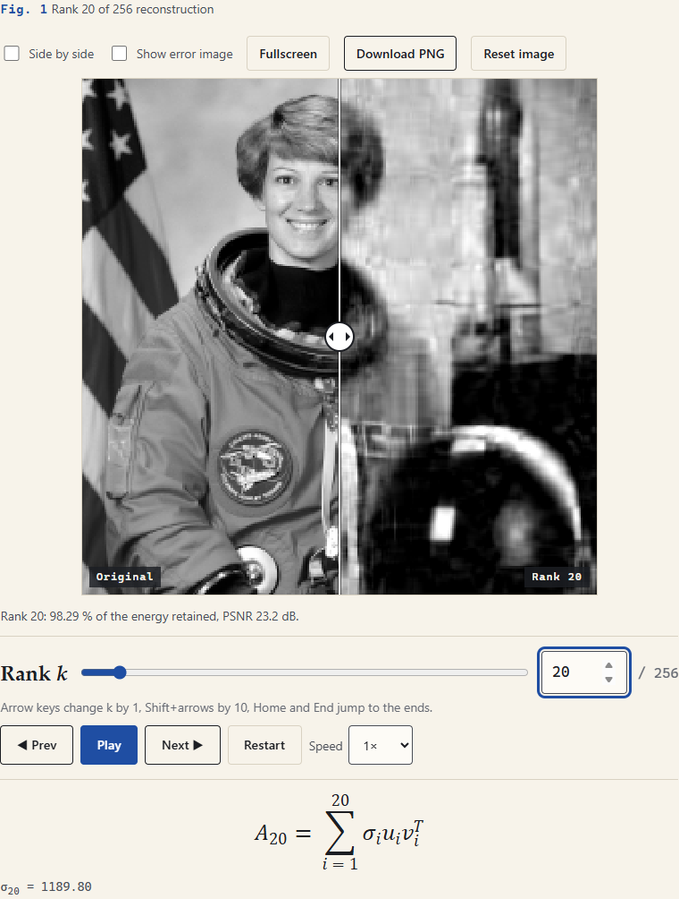
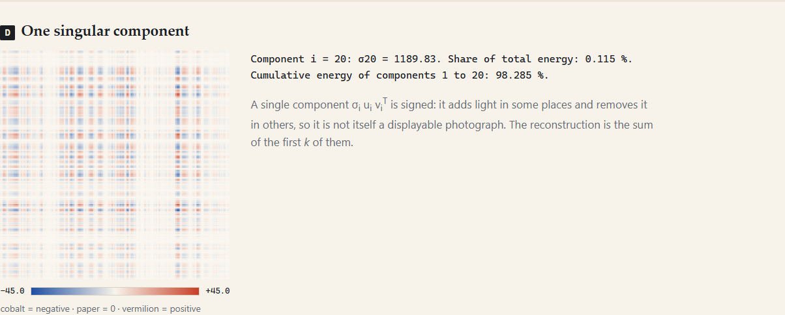
All five are drawn from numbers computed by the project's own code. The red dashed line and dot always mark the rank k you are currently looking at, so the graphs move with the picture.
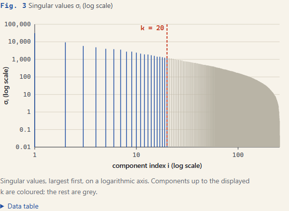
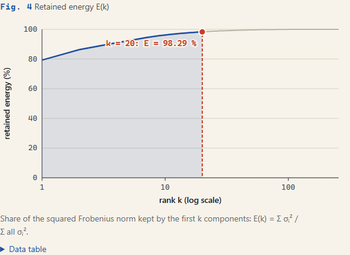
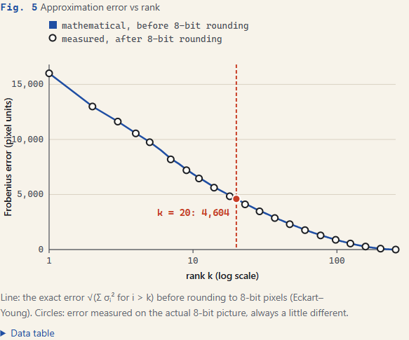
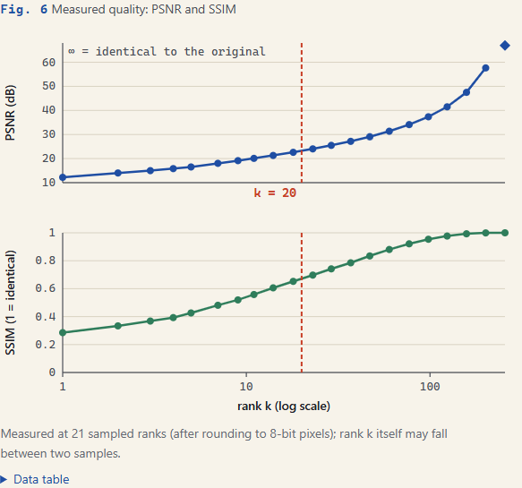
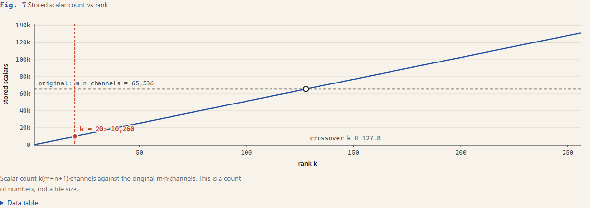
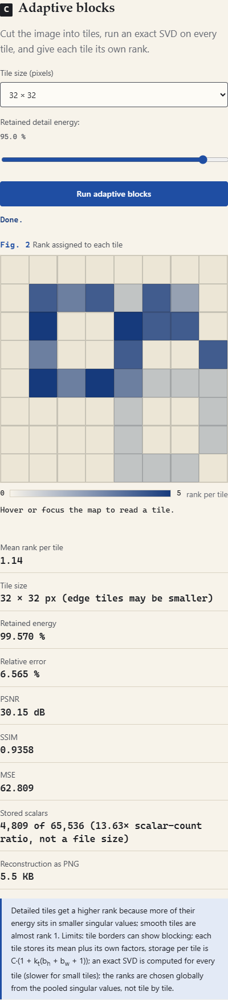
Why are singular values the square roots of eigenvalues of AᵀA? Because AᵀA = VΣ²Vᵀ, so its eigenvalues are σ².
Why sort them? So the first k layers are the biggest ones, which minimises the error (Eckart–Young).
Is the SVD unique? The singular values are; the vectors are only unique up to sign (and rotation when two singular values are equal).
Why does a checkerboard compress so well? It has only two truly different patterns (rank 2), so two layers rebuild it perfectly.
Why is the exact method slow and the random one fast? Exact rotates every pair of columns repeatedly (about m·n² work per sweep); random works on a small k-column sketch (about m·n·k).
Why is the ratio below 1× for large k? Each layer costs m+n+1 numbers, so many layers cost more than the original m·n.
git clone https://github.com/varunkarthic/MAT248-SVD-Image-Compression cd MAT248-SVD-Image-Compression py -m venv .venv .venv\Scripts\activate pip install -e ".[dev]" svdcomp-web # then open http://127.0.0.1:5000 pytest -q # run the tests svdcomp info photo.png # command-line tools svdcomp compress photo.png out.png -k 20
Reference assigned for the course: https://arxiv.org/html/2512.16226v1. Sample photograph: NASA, astronaut Eileen Collins (public domain).